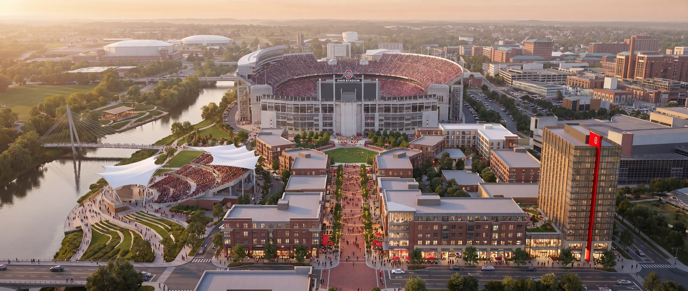

The Anchor
Years 1-3
- The Amphitheater
- Scarlet Spine: first retail block
- Surface infrastructure & utilities

The Vision
Game day already brings the crowd. The Horseshoe District gives them a reason to stay, and a reason to come back on the other 358 days.
The Opportunity: Why Now
The Master Plan
The Upside
Benchmarked against The Battery Atlanta, Titletown in Green Bay, and the Columbus Arena District, which now contributes roughly $150M per year to the Franklin County economy. Preliminary estimates pending formal feasibility study; full methodology and sources in the project appendix.
The Partner
As Ohio State's multimedia rights partner, Learfield is built to convert this district into durable athletics revenue from day one.
Package and sell district, venue, and precinct naming rights through relationships with national brands already invested in Buckeye athletics.
Price, package, and sell amphitheater events, premium inventory, and game-day hospitality through dedicated collegiate ticketing and premium sales teams.
Turn the Scarlet Spine and fan plaza into measurable sponsor activation inventory, on the seven game days and across the other 358.
Use fan insights to program the district's calendar, target premium and season-ticket upsell, and prove sponsor return.
Phasing
Years 1-3
Years 3-6
Years 6-10
Concept presentation. All figures are illustrative placeholders pending formal feasibility study. Not an offering of securities.